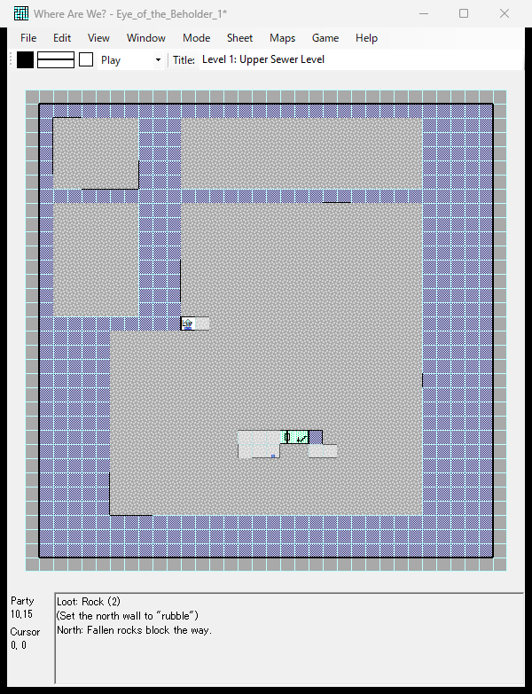

「Where Are We?」は、DOSBox で動いているゲームを読み取って、歩いた場所の地図を自動で描く Windows 用のツールです（英語）。
この日本語化パッチを入れたままでも使えます。パーティーの位置や向き、能力や持ち物、今いる場所の説明などが Where Are We? の窓に表示されます。

Where Are We? の画面（地下水道の第1層。歩いた所から地図が描かれていきます）
使い方
Where Are We? のページから zip をダウンロードして展開し、中の WhereAreWe の exe を起動します。動かすには .NET Framework 4.5 以上が要ります（Windows 10・11 には入っています）。
最初の起動では、設定の案内（Welcome to "Where Are We"）が出ます。ゲームの場所は自動で見つかります。
「Change the DOSBox settings for the above games to be windowed instead of fullscreen」のチェックは外してから、Next と Finish で閉じます。
「Non-administrator mode detected」と出たら「はい」で続けます。
メニューの View → Options を開き、DOSBox タブの「DOSBox memory quick-scan only (check only known memory offsets)」のチェックを外して、OK を押します。
Steam 版の場合だけ、ゲームを起動するときの設定を、Where Are We? に合うものに替えます。
zip の中の WhereAreWe用 フォルダの game.conf を、games\Eye of the Beholder ENG\game.conf に上書きしてください（元の game.conf は、別の場所に控えを取っておいてください）。
ゲームの遊び方やセーブデータは変わりません。GOG 版は、この手順はいりません。
いつもどおりゲームを起動して、冒険を始めます。Where Are We? がゲームを見つけると、地図にパーティーの位置が出て、歩いた所から地図が描かれていきます。
ほかのゲームの地図が開いていると「Different game running」と聞かれるので、「はい」を押してこのゲームの地図に切り替えます。
注意
Eye of the Beholder の DOSBox は、1 つだけ起動してください。2 つ以上起動していると、Where Are We? が別の方を読もうとすることがあります。
Where Are We? の画面（地図の説明や、怪物・品物の名前など）は英語のままです。
Steam 版で起動の設定を元に戻すときは、控えの game.conf を戻してください。
Where Are We? は、この日本語化パッチとは別に作られているツールです。詳しい使い方は Where Are We? のページをご覧ください。